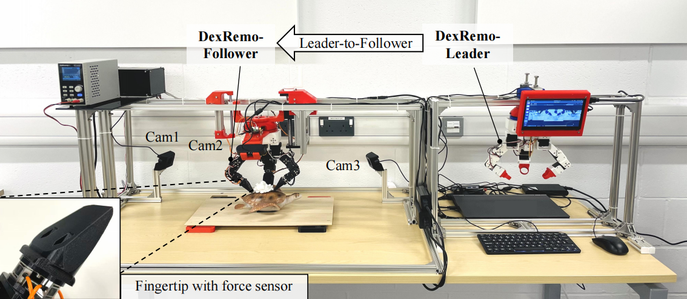
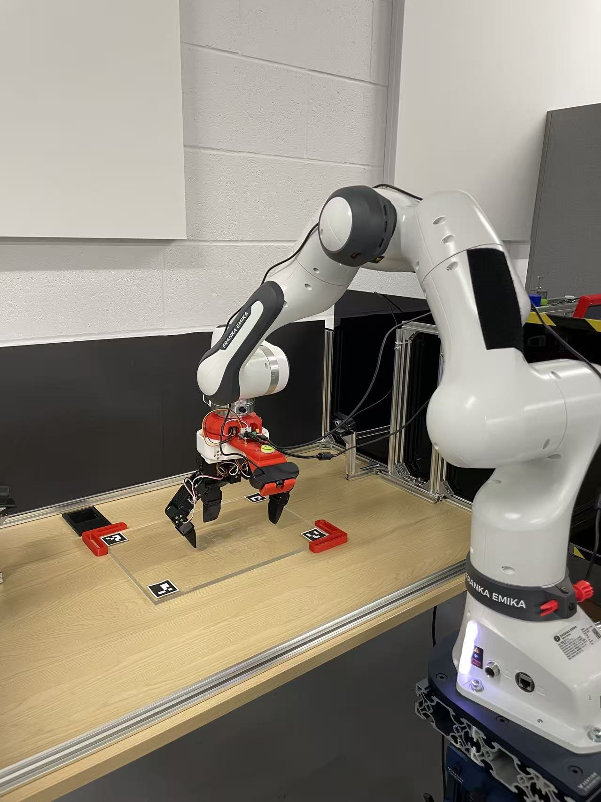
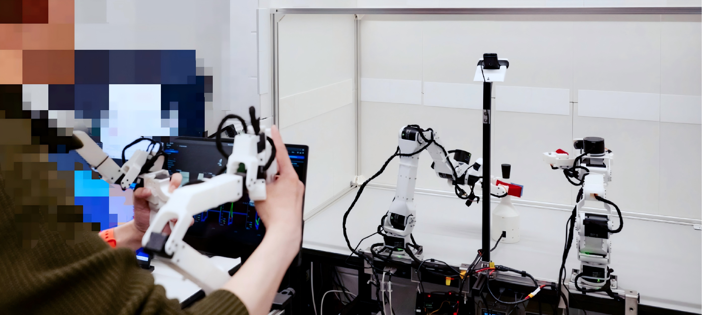
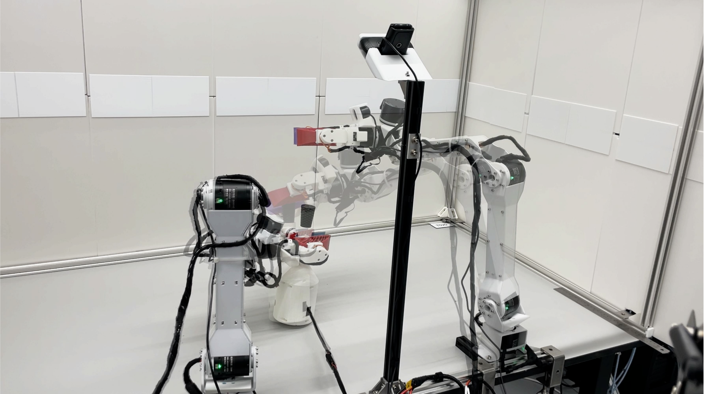
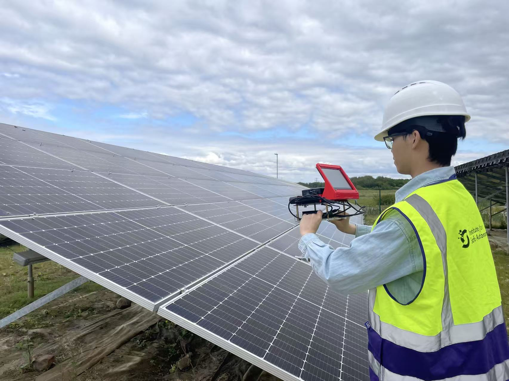
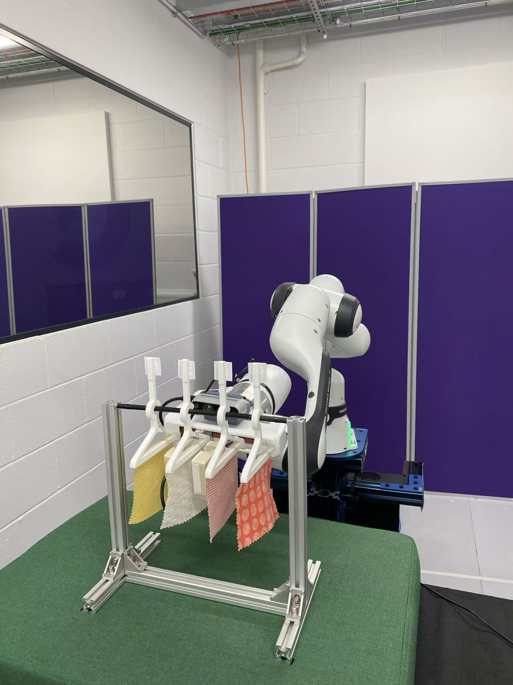

```html
钟汉阳 | 项目展示
钟翰扬｜项目展示
英国约克大学电子工程系机器人方向博士研究生，预计于2026年毕业。
研究聚焦于具身智能场景下的接触丰富操作、多模态机器人学习、灵巧手设计、力觉感知、模仿学习与空间感知。
本页面整理了本人博士阶段及相关研究工作中的代表性项目，用于展示论文背后的真实机器人系统、实验平台与项目图片。
第一/共同第一作者在审稿件
DexRemo：开放力感知灵巧手平台
共同第一作者
灵巧操作
力觉感知
接触丰富操作
真实机器人系统


面向接触丰富移除操作的开放式力感知灵巧手平台与评测套件，集成指尖力觉感知、灵巧手硬件设计、嵌入式控制与真实机器人操作实验。
论文：
Zhong, H., et al. An Open Force-Sensing Hand Platform and Evaluation Suite for Contact-Rich Removal Manipulation.
IEEE Transactions on Robotics (T-RO),
second-round review（二轮审稿中）.
本人贡献：
灵巧手平台设计、指尖力传感器开发、系统集成与接触丰富操作实验验证。
Project Page
Hidden Force-Regime Coverage：接触丰富双臂模仿学习
独立第一作者
双臂操作
模仿学习
遥操作示教
多模态感知


针对接触丰富双臂操作任务中的隐式力域覆盖问题，构建双臂遥操作平台，结合视觉、力觉与本体感觉数据，完成示教采集、策略训练与真实机器人部署。
论文：
Zhong, H., et al. Hidden Force-Regime Coverage for Contact-Rich Bimanual Imitation Learning.
Conference on Robot Learning (CoRL 2026),
under review（审稿中）.
本人贡献：
双臂遥操作平台搭建、多模态数据采集、力觉感知系统设计、模仿学习算法验证与真实系统部署。
Project Page
StrucLine-SLAM：面向结构主导环境的全几何 SLAM 系统
第一作者
SLAM
空间感知
线特征
结构化环境


面向走廊、车间、光伏场等结构主导低纹理环境，提出轻量化全几何 SLAM 系统，利用线特征与结构几何约束提升定位与建图鲁棒性。
论文：
Zhong, H., Wang, L., Post, M. StrucLine-SLAM: A Lightweight and Fully Geometric SLAM System for Structure-Dominant Environments.
Robotics and Autonomous Systems (RAS),
under review（审稿中）.
本人贡献：
提出线特征几何 SLAM 框架，开发结构感知特征匹配、建图与优化模块，并完成公开数据集和自采场景验证。
Paper
Project Page
共同作者代表性论文
MLLM-Fabric：多模态大模型驱动的布料分拣机器人系统
RA-L
ICRA 2026 展示
多模态大模型
机器人感知
布料操作



基于多模态大语言模型的织物分拣与选取机器人框架，将视觉感知、语言推理、提示词设计与机器人决策相结合。
论文：
Wang, L., Zhong, H., Wang, T., Luo, S., Zhu, J. MLLM-Fabric: Multimodal Large Language Model-Driven Robotic Framework for Fabric Sorting and Selection.
IEEE Robotics and Automation Letters (RA-L), 2025.
本人贡献：
多模态布料数据采集、模型微调支持、推理问题与提示词设计，并作为 ICRA 2026 poster presenter 展示该工作。
DOI
Video
Code
第一/共同第一作者代表性论文
BRU：缓解大语言模型选择题中的认知偏差
共同第一作者
CogSci 2025
大语言模型
认知偏差
多智能体辩论
针对大语言模型在多选题推理中的认知偏差问题，研究多智能体辩论与推理机制对模型鲁棒性和实用性的影响。
论文：
Zhong, H., et al. Balancing Rigor and Utility: Mitigating Cognitive Biases in Large Language Models for Multiple-Choice Questions.
Proceedings of the Cognitive Science Society, 2025.
Paper
FENet：面向车道线检测的聚焦增强网络
共同第一作者
ICME 2024 Oral
自动驾驶
计算机视觉
车道线检测
面向复杂道路场景的车道线检测网络，通过增强车道线特征表达，提高复杂视觉条件下的检测鲁棒性。
论文：
Zhong, H., et al. FENet: Focusing Enhanced Network for Lane Detection.
Proceedings of IEEE ICME 2024, Oral Paper.
DOI
Code
LLM-SAP：基于情境感知的大语言模型机器人规划
共同第一作者
ICMEW 2024
大语言模型
机器人规划
情境感知

研究大语言模型在机器人情境感知与任务规划中的应用，关注上下文理解、任务推理与安全决策能力。
论文：
Zhong, H., et al. LLM-SAP: Large Language Models Situational Awareness Based Planning.
ICME 2024 Workshop.
DOI
Code
项目能力总结
- 真实机器人平台搭建与系统集成
- 灵巧手、力觉传感器与多模态感知系统开发
- 遥操作示教、模仿学习与机器人学习策略部署
- SLAM、空间感知与结构化环境建图
- 视觉-语言-动作模型与具身智能系统验证
```